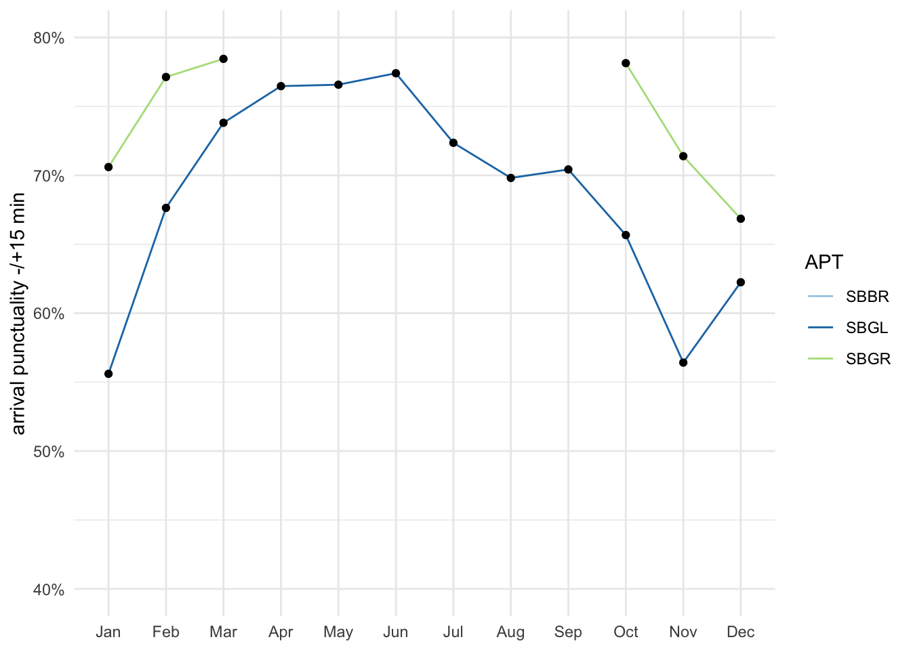

4 Predictability
The preceding sections have demonstrated that both systems exhibit unique reactions to the broader developments in air transport. Predictability plays a crucial role in these systems, impacting their functioning during both the strategic phase, where airline schedules are formulated, and the operational phase, where Air Navigation Service Providers (ANSPs) and stakeholders manage the delicate balance between demand and capacity. Enhanced predictability stands to be advantageous for ANSPs, mainly when serving airspace users, as it contributes to highly efficient operations, even during periods of peak demand. This chapter focuses on arrival and departure punctuality as crucial predictability indicators.
4.1 Arrival Punctuality
Figure 4.1 shows the evolution of arrival punctuality for the select airports in Brazil and Europe. When comparing both regions in 2019 and 2022, Brazil’s share of early arrivals (earlier than 15 minutes before the scheduled arrival) is significantly higher than the same European portion. The share of early arrivals accounts for 20-25% across all Brazilian airports. In Europe, flights tend not to arrive significantly earlier than their scheduled time. On average, early arrival range between 8-15% in Europe in 2019. Recent studies conducted by the CGNA/DECEA show that air operators in Brazil declare flight times significantly longer than observed. Similar behaviour is also observed in Europe. Built in buffer times help to achieve a high “on-time-performance” record and appeal to passengers favouring a timely arrival performance. Furthermore, both regions have regulations for passenger compensation in place which are triggered in the case of arrival delays. DECEA has already established a forum with the air operator regulator to discuss and propose solutions.
Note
speak about truncated axes
European airports saw their share of punctual flights in 2022 decrease broadly compared to 2019, even with a more proportional distribution than the Brazilian system. For European operators, there were two primary factors contributing the the lower performance in 2022. The most significant is the cumulative effect, showing that the network of flights has little ability to absorb the delay of one specific delayed flight. The knock-on effect was amplified by the local resource constraints in terms of passenger and turn-around facilitation. The incrasing traffic demand posed challenges at many airports in Europe. Delayed arrivals accumulated further reactionary delay and ultimately passed the delay systematically on to next flights. Further constraints were linked to air space and flow restrictions resulting from the geo-political conflict surrounding the Russian invasion in Ukraine. On average, arrival delays of 15 minutes or more compared to the schedule ranged between 25-35% across the Europen study airports in 2022.
Figure 4.4 compares the share of early and late arrivals at each study airport in 2019 and 2022. From a high-level perspective, air traffic tends to arrive well ahead of schedule in Brazil, while Europe observes a higher share of delayed arrivals. Guarulhos (SBGR) remained the Brazilian airport with the highest share of early flights in 2022 (i.e. 33%), followed by Campinas (SBKP) with 30%. Both airports are essential hubs in the country, and anticipation can be a consequence sought by air operators for better accommodation of the flight network. However, for flow control, this lack of precision is equally problematic, affecting the optimal allocation of resources for the provision of air traffic control and flow service. In turn, Madrid (LEMD) was the European element with the most significant share of early arrivals (i.e. 22%) in 2022. Pre-pandemic such a share was observed at London Heathrow in 2019. These shares still range about 11% lower than the highest shares in Brazil. The distorted nature of the European network in 2022 becomes apparent when observing the share of delayed flights. For example services at London Gatwick (EGKK) faced a share of 39% of delayed flights. Airport operators were identified as the major contributors to primary delays (ground handling, staff shortage), followed by ATFM delays. However, the aforementioned reactionary effect was the main driver of knock-on delays (EUROCONTROL Central Office of Delay Analysis 2023) 1.
4.2 Departure Punctuality

The preceding section highlighted how the general traffic conditions in the previous years influenced the dependability of arrival schedules. In this section, we assess the degree of departure punctuality measured as the difference between the scheduled (i.e. planned) departure versus the observed actual off-block time. Figure 4.5 shows the overall departure punctuality at Brazilian and European airports in 2019 compared to 2022. Despite traffic levels in 2022 still ranging below their 2019 pre-pandemic levels, the departure punctuality in 2022 was - on average - lower than before COVID.
The difference in departure and arrival punctuality between 2022 and 2019 was significantly more pronounced for Europe indicating an increased strain on the turnaround processes. There has been a significant increase in poor performance days, with departure punctuality falling below 50% and arrival punctuality dropping below 60%, occurring more frequently than in 2019. On the Brazilian side, the Galeão airport (SBGL) observed the highest share of delayed departure flights. It should be noted that the SBGL is the only airport with the Apron Control service directly provided by the airport. Some inefficiency in the coordination between Tower and Apron or divergence at the indicator collection point for the location may be contributing to the observed performance.
Departure punctuality appeared slightly higher in Brazil in 2022 in comparison to 2019 and outperforms the punctuality levels observed in Europe. It is also notworthy, that in Brazil there is a higher share of flights blocking off between 15 to 5 minutes before their scheduled time. Further research may help to clarify the factors driving this phenomenon.
The change of the share of early and late departures in 2019 and 2022 is shown in Figure 4.8. This presentation highlights the earlier observations. On average, European airports observed a higher share of delayed departures by a factor of 2-3 in comparison to Brazil. While the picture varies, the distored nature of the traffic in 2022 is visible in the higher share of delay departures in 2022 in Europe in comparison to the pre-pandemic levels in 2019. This put a strain on the schedule stability across Europe. Local issues (e.g. reduced facilication capacity at airports) affected air traffic services in terms of surface movement, but also rippled into the network affecting the sequencing of arrivals and departure traffic.
4.3 Summary
Arrival and departure punctuality play an important role in terms of balancing demand and capacity. Strong distortions of the schedule will ultimately ripple down into reactionary delay and require a higher effort for both the arrival flow and surface movement control. Turnaround distortions affect therefore the planning accuracy of air navigation services and may lead to unwanted side-effects (e.g. longer sequencing and holding in the terminal airspace, passenger inconvenience due to longer taxi-times/blocked gates).
Distinct patterns were observed in both regions that cannot only be explained by the level of traffic recovery. On average, a higher share of flights arrives well ahead of schedule in Brazil. This pattern is largely unchanged when comparing 2019 and 2022. The ripple effect of the low preparedness level of European airports to address the returning traffic in 2022 is well documented. This yielded a significant low performance in terms of departure punctuality exceeding levels observed in Brazil by a factor of 2-3. Distortions of the local schedule can have knock-on effects on the air navigation service provision, both in terms of surface movement and arrival sequencing. More research is needed to investigate and understand the underlying drivers and to what extent regional connectivity influences the observed patterns.
See CODA report at https://www.eurocontrol.int/publication/all-causes-delays-air-transport-europe-annual-2022.↩︎